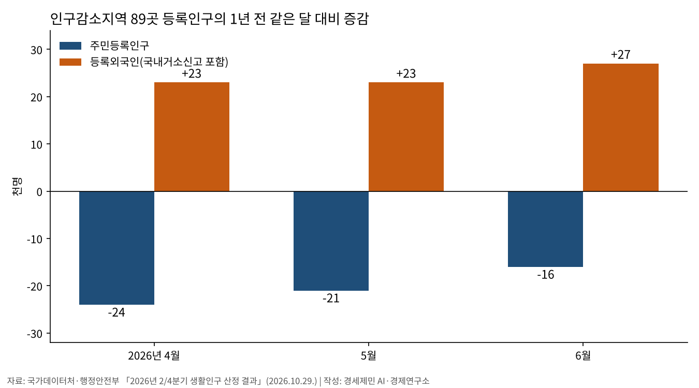
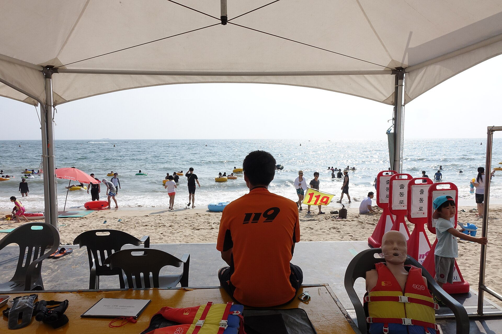
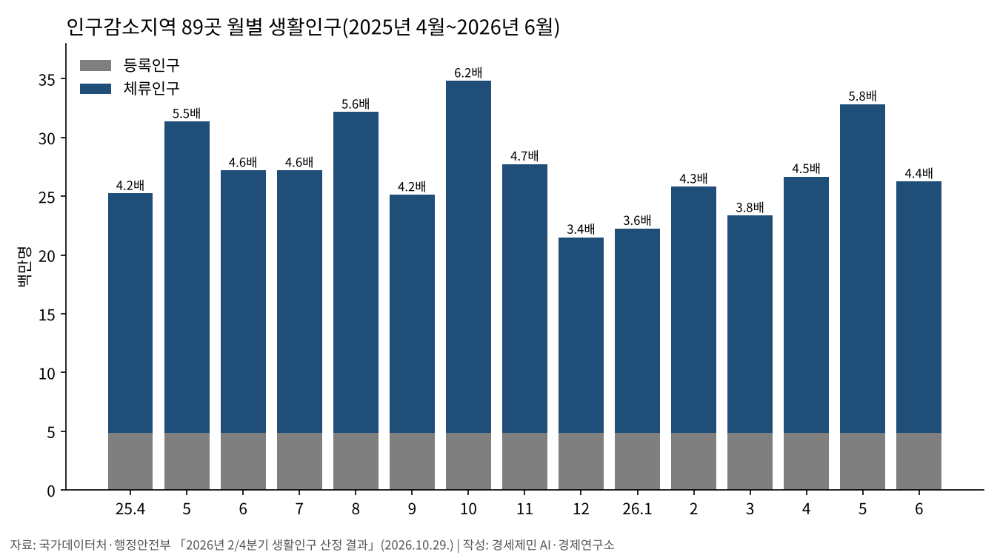
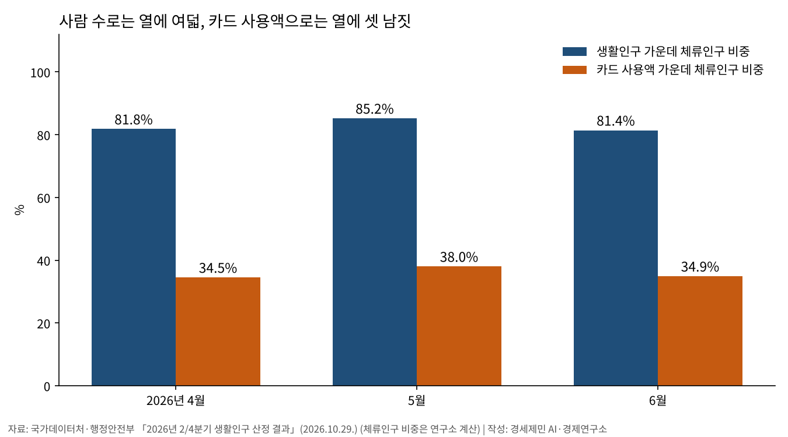
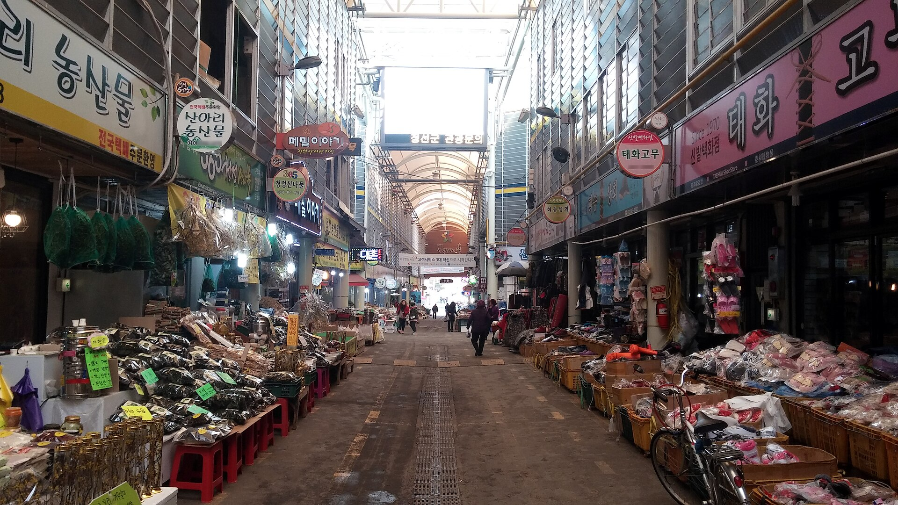
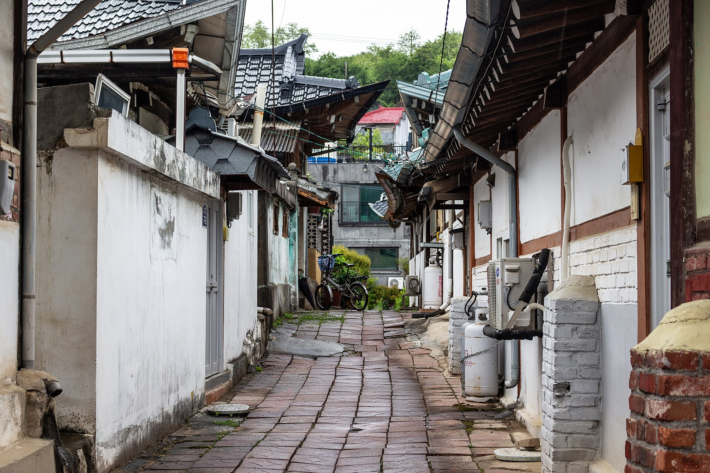
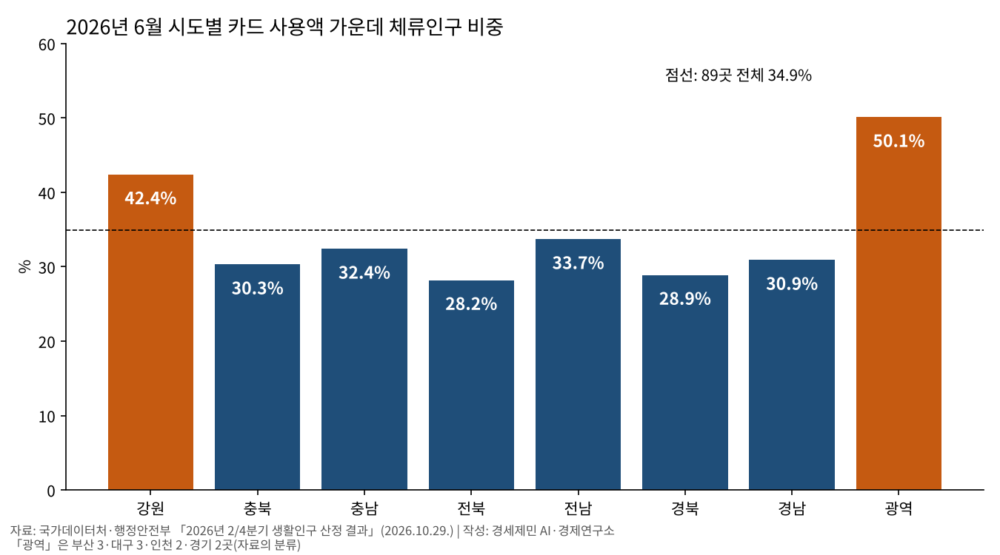
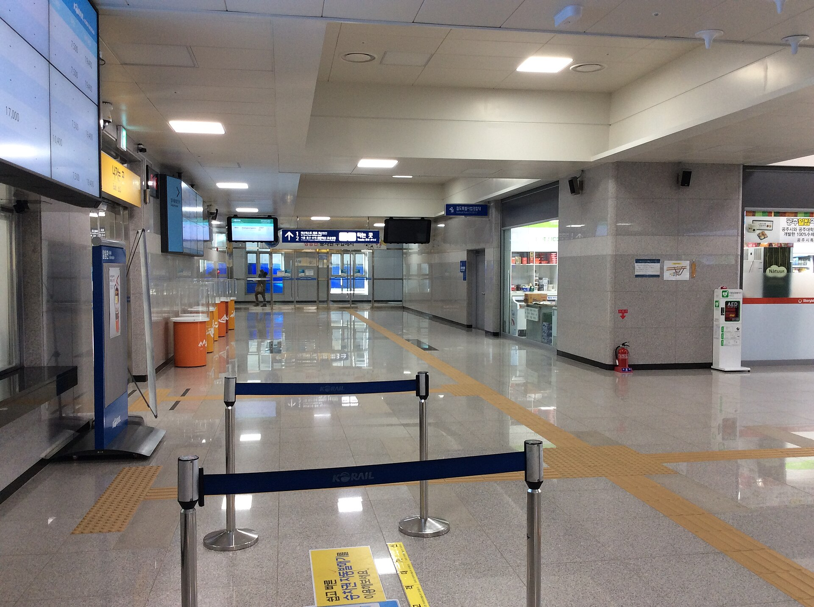

[인구 브리핑] 인구감소지역 주민 1년 새 1만6000명 감소, 외국인은 2만7000명 증가
6월 체류인구, 등록인구의 4.4배
체류인구 몫, 사람 수 81%·카드 사용액 35%
체류 배수 양양 14.5배·인천 옹진 12.8배
인구감소지역 89곳의 6월 주민등록인구는 1년 새 1만6000명 줄었다. 같은 기간 등록외국인은 2만7000명 늘었다. 89곳을 합치면 외국인 증가가 주민 감소보다 커 등록인구는 오히려 1만1000명 늘었다. 정부가 지원 잣대로 키우는 생활인구 숫자 뒤에서 벌어지는 일이다.
생활인구는 머물다 가는 사람까지 인구로 친다. 89곳 시군구의 생활인구를 더하면 6월 2626만5000명이다. 체류인구가 등록인구의 4.4배다. 그러나 이 지역에서 쓴 카드 사용액의 65%는 여전히 등록인구 몫이다. 카드 사용액으로 보면 지역 소비의 바닥은 사는 사람이 깐다.
주민 1만6000명 줄고, 외국인 2만7000명 늘고
국가데이터처와 행정안전부가 10월 29일 낸 「'26년 2/4분기 『생활인구』 산정 결과」를 보면 6월 89곳 등록인구는 487만4000명이다. 1년 전보다 1만1000명 늘었다. 늘어난 몫은 모두 외국인이다.
주민등록인구는 468만2000명으로 1만6000명 줄었다. 등록외국인(국내거소신고 포함)은 19만2000명으로 2만7000명(16.4%) 늘었다. 4월과 5월도 같은 흐름이다. 주민은 2만4000명, 2만1000명 줄었고 외국인은 두 달 모두 2만3000명씩 늘었다.
나이로 보면 빈자리가 더 또렷하다. 6월 등록인구 가운데 30세 미만은 1년 새 2만3000명 줄었다. 60세 이상은 4만6000명 늘었다. 늙어 가는 주민 위에 외국인이 더해진 모습이다.
나라 전체로도 외국인은 늘고 있다. 행정안전부가 10월 28일 낸 통계를 보면 외국인주민은 266만2967명(2025년 11월 1일 기준)으로 총인구의 5.1%다. 귀화자와 그 자녀까지 센 수치로 1년 새 7만9341명 늘었다. 유학생이 4만1092명(17.6%)으로 가장 많이 늘었다.


사람 수의 81%, 카드 사용액의 35%
생활인구는 등록인구에 체류인구를 더한 값이다. 체류인구는 통근·통학·관광으로 와서 하루 3시간 이상 머문 날이 한 달에 하루라도 있는 사람이다. 「인구감소지역 지원 특별법」과 시행령이 이렇게 정했다.
6월 체류인구는 2139만2000명으로 등록인구의 4.4배다. 5월에는 2798만6000명, 5.8배였다. 6월 생활인구 가운데 체류인구가 81.4%다. 카드 사용액 가운데 체류인구 몫은 34.9%다.
두 비중은 사람을 세는 방식이 다르다. 등록인구는 그 지역에 주소를 둔 사람으로 세고, 체류인구는 하루만 머물러도 한 사람으로 센다. 6월 체류인구는 평균 3.4일 머물렀고 52.3%는 하루만 머물렀다. 날수를 맞춰 보면 휴일 체류인구가 평일의 2.5배다.
행정안전부는 같은 날 「2026년 5월 생활인구 상반기 최대 규모, 인구감소지역에 활력 더해」라는 보도자료를 냈다. 4~6월 생활인구 합계는 1년 전보다 2.4% 늘었다(연구소 계산). 6월 생활인구는 94만1000명 줄었다. 국가데이터처는 휴일이 줄어 당일치기 체류가 줄었다고 설명했다.
지역마다 차이는 크다. 강원은 카드 사용액의 42.4%를 체류인구가 썼다. 전북은 28.2%, 경북은 28.9%다. 부산·대구·인천·경기의 10곳은 50.1%로 절반을 넘었다.
지역경제학에는 오래된 다툼이 있다. 더글러스 노스는 1955년 논문에서 지역 성장을 밖에 파는 수출 기반이 이끈다고 봤다. 찰스 티부는 이듬해 지역 소득이 수출만으로 정해지지 않는다고 반박했다. 지역 안 산업과 투자, 정부 지출도 소득을 정한다는 말이다.
인구감소지역에서는 두 힘이 함께 돈다. 방문객이 쓰는 돈은 밖에서 들어오는 수출 몫이고, 사는 사람의 지출은 지역 안 순환의 바닥이다. 89곳 카드 사용액의 65%가 등록인구 몫이다. 그 등록인구의 46%가 60세 이상이고, 주민등록인구는 줄고 있다.



양양 14.5배·옹진 12.8배, 관광지에 몰리는 체류인구
6월 체류인구 배수가 가장 높은 곳은 강원 양양(14.5배)이다. 강원 고성(14.4배), 경기 가평(12.8배), 인천 옹진(12.8배)이 뒤를 잇는다. 체류인구 수로는 가평이 81만9000명으로 가장 많다.
인천 옹진은 배수 4위다. 주민등록인구 1만9340명에 체류인구가 25만4778명이다. 강화는 발표 자료의 상위 열 곳에 들지 않았다. 주민등록인구 6만9681명에 체류인구가 52만176명으로, 외국인을 더한 등록인구로 나누면 7배 남짓이다(연구소 계산).
6월 배수 상위 열 곳은 양양·고성·가평·옹진·평창·단양·태안·정선·홍천·담양이다. 바다와 산, 강을 낀 관광지다. 89곳 전체 배수도 달마다 출렁인다. 추석 연휴가 낀 지난해 10월 6.2배에서 12월 3.4배로 내려갔다.


지방소멸대응기금 7208억원, 옹진 1인당 36만원·강화 12만4000원
정부는 2022년부터 2031년까지 해마다 1조원 규모의 지방소멸대응기금을 나눠 준다. 2026년 기초지원계정의 인구감소지역 배분액은 곳당 72억~120억원이다. 평가 등급에 따라 우수 8곳 120억원, S등급 11곳 88억원, A등급 30곳 80억원, B등급 40곳 72억원이다.
등급별 배분액을 더하면 89곳 몫은 7208억원이다(기초지원계정, 연구소 계산). 등록인구 1인당 한 해 14만8000원이다. 관심지역 몫을 더한 7580억원은 기초지원계정 7500억원보다 80억원 많아, 보도자료만으로는 차이를 풀 수 없다.
올해는 등급별 정액이라 등급과 인구에 따라 1인당 몫이 크게 갈린다. 옹진(B등급 72억원)은 36만원, 강화(S등급 88억원)는 12만4000원이다. 주민이 적은 옹진은 강화보다 등급이 낮은데도 한 사람 앞 기금이 세 배 가깝다.
행정안전부는 지난해 12월 3일 기금을 시설 조성 중심에서 사람 중심으로 바꾼다고 밝혔다. 4월 14일에는 2027년 기금을 일자리·주거·돌봄에 쓰고 다년도 투자계획을 세우게 한다고 했다. 완공 시설의 운영과 인구 유입 효과를 더 무겁게 평가하고, 최저 대비 최고 배분액 비율도 넓힌다.
행정안전부는 10월 7일 인구감소지역 92곳을 5년 만에 재지정·고시한다고 밝혔다. 이번 생활인구 자료는 2021년 지정한 89곳 기준이다. 새 지정 지표 9개에는 시가화율, 취업자 수와 함께 생활인구가 처음 들어갔다.
생활인구가 지정과 성과의 잣대로 함께 쓰이면 지역마다 축제와 관광으로 체류 배수를 키우는 경쟁이 붙기 쉽다. 생활인구는 이동통신 기지국 기록으로 셈한 실험적 통계다. 작성기관도 실제 체류인구와 차이가 날 수 있다고 밝혔다.

다녀가는 외국인 50만9000명, 사는 외국인의 삶은 생활인구 셈 밖
6월 89곳을 다녀간 외국인 체류인구는 50만9000명으로 1년 새 6만5000명 늘었다. 체류자격은 취업·구직이 23.3%로 가장 많고, 재외동포 20.0%, 결혼이민·거주 19.1%, 유학·연수 17.7% 차례다.
외국인은 덜 오가고 오래 머문다. 등록인구 대비 배수는 2.7배로 내국인 4.5배보다 낮다. 평균 4.6일, 체류일당 13.7시간을 머물러 내국인(3.4일, 11.7시간)보다 길다.
6월 등록외국인 체류인구의 카드 사용자 1인당 사용액은 10만5000원으로 내국인 12만8000원보다 적다. 이 집계는 국내 카드사 6곳의 승인액만 담는다. 현금과 다른 결제 수단으로 쓴 돈은 잡히지 않는다.
이번 생활인구 자료에서는 다녀가는 외국인을 체류자격별로 나눠 볼 수 있다. 늘어난 등록외국인 2만7000명이 어떤 자격으로 와서 무슨 일을 하는지는 나오지 않는다. 등록인구를 받치는 사람의 모습이 자료에서 비어 있다.
법무부는 5월 18일부터 인구감소지역 소상공인과 농업법인이 내국인 직원 없이도 지역특화형 우수인재 1명을 고용하게 했다. 3년 이상 운영·전년 매출 1억원 이상 요건에 2027년 말까지 시범이다. 일손을 부르는 제도는 생기지만, 외국인 노동자가 일하고 사는 조건은 아직 셈 밖에 있다.
체류인구는 등록인구의 4.4배지만 지역 카드 사용액의 65%는 사는 사람이 쓴다. 89곳 합계로 주민은 1만6000명 줄고 외국인은 2만7000명 늘었다. 인구감소지역의 셈법은 사람 수와 돈, 주민과 외국인을 함께 세는 데서 갈린다.
참고문헌
공식 발표자료
- 국가데이터처 빅데이터통계과·행정안전부 균형발전제도과, 「'26년 2/4분기 『생활인구』 산정 결과」, 보도자료(실험적통계 2024-002호), 2026년 10월 29일, https://mods.go.kr/board.es?mid=a10301010000&bid=246&act=view&list_no=447707
- 행정안전부 사회통합지원과, 「국내 거주 외국인주민 수 266만 명, 총인구 대비 5.1%, 4년 연속 증가세 이어가」, 보도자료, 2026년 10월 28일(KDI 경제정보센터 게시), https://eiec.kdi.re.kr/policy/materialView.do?num=288644
- 국가데이터처, 「'26년 2/4분기 『생활인구』 산정 결과」 내용 요약(정책브리핑 게시), 2026년 10월 29일, https://www.korea.kr/briefing/pressReleaseView.do?newsId=156787054
- 행정안전부 균형발전제도과, 「2026년 5월 생활인구 상반기 최대 규모, 인구감소지역에 활력 더해」, 보도자료, 2026년 10월 29일, https://eiec.kdi.re.kr/policy/materialView.do?num=288695
- 행정안전부 균형발전제도과, 「살기 좋은 동네 사람이 모이는 지역에 집중 투자」(2027년 지방소멸대응기금 평가·배분체계 개편), 보도자료, 2026년 4월 14일, https://www.korea.kr/briefing/pressReleaseView.do?newsId=156754959
- 법무부 지역체류지원과, 「인구감소지역 소상공인 배려, 외국인 고용특례 신설」, 보도자료, 2026년 5월 11일, https://www.korea.kr/briefing/pressReleaseView.do?newsId=156760907
- 행정안전부 균형발전제도과, 「5년 만의 '인구감소지역' 재지정, 지역 활력 회복을 위한 지원을 강화한다」, 보도자료, 2026년 10월 7일, https://www.korea.kr/briefing/pressReleaseView.do?newsId=156784481
- 행정안전부 균형발전제도과, 「2026년 지방소멸대응기금 1조, 시설이 아닌 '사람 중심'으로 쓰입니다」, 보도자료(붙임1 2026년 지방소멸대응기금 투자계획 평가 결과), 2025년 12월 3일, https://www.korea.kr/briefing/pressReleaseView.do?newsId=156732898
학술 문헌
- Douglass C. North, "Location Theory and Regional Economic Growth", Journal of Political Economy 63(3), 243~258쪽, 1955
- Charles M. Tiebout, "Exports and Regional Economic Growth", Journal of Political Economy 64(2), 160~164쪽, 1956
도표 출처
- [도표1]~[도표4] 경세제민 AI·경제 연구소 작성, 자료 국가데이터처·행정안전부 「'26년 2/4분기 『생활인구』 산정 결과」(2026년 10월 29일). [도표3]의 생활인구 가운데 체류인구 비중은 체류인구를 생활인구로 나눈 연구소 계산
[사진 출처]
- [사진1] Bernard Gagnon, "Hahoe Byeolsingut Tallori 03.jpg", 위키미디어 공용, 2022년 10월 8일 촬영, CC0, https://commons.wikimedia.org/wiki/File:Hahoe_Byeolsingut_Tallori_03.jpg
- [사진2] 최광모, "Lifeguard at Daecheon Beach in Korea - 2015 (RX10DSC01569).jpg", 위키미디어 공용, 2015년 8월 1일 촬영, CC0, https://commons.wikimedia.org/wiki/File:Lifeguard_at_Daecheon_Beach_in_Korea_-_2015_(RX10DSC01569).jpg
- [사진3] IRTC1015, "Jeongseon Market.jpg", 위키미디어 공용, 2017년 12월 29일 촬영, 퍼블릭 도메인, https://commons.wikimedia.org/wiki/File:Jeongseon_Market.jpg
- [사진4] Nt, "An Alley in Ganghwa Island.jpg", 위키미디어 공용, 2024년 5월 7일 촬영, CC0, https://commons.wikimedia.org/wiki/File:An_Alley_in_Ganghwa_Island.jpg
- [사진5] Katsujiro Maekawa(플리커에서 옮김), "Gapyeong Railway Bridge May 19, 2018 sunset 19 36PM Northward Gapyeong-eup (48669552487).jpg", 위키미디어 공용, 2018년 5월 19일 촬영, CC0, https://commons.wikimedia.org/wiki/File:Gapyeong_Railway_Bridge_May_19,_2018_sunset_19_36PM_Northward_Gapyeong-eup_(48669552487).jpg
- [사진6] Udonhan1992, "Gongju Station Waiting Room 1.jpg", 위키미디어 공용, 2018년 11월 23일 촬영, CC0, https://commons.wikimedia.org/wiki/File:Gongju_Station_Waiting_Room_1.jpg
© 경세제민 AI·경제 연구소. 인용할 때는 출처를 밝혀 주십시오.